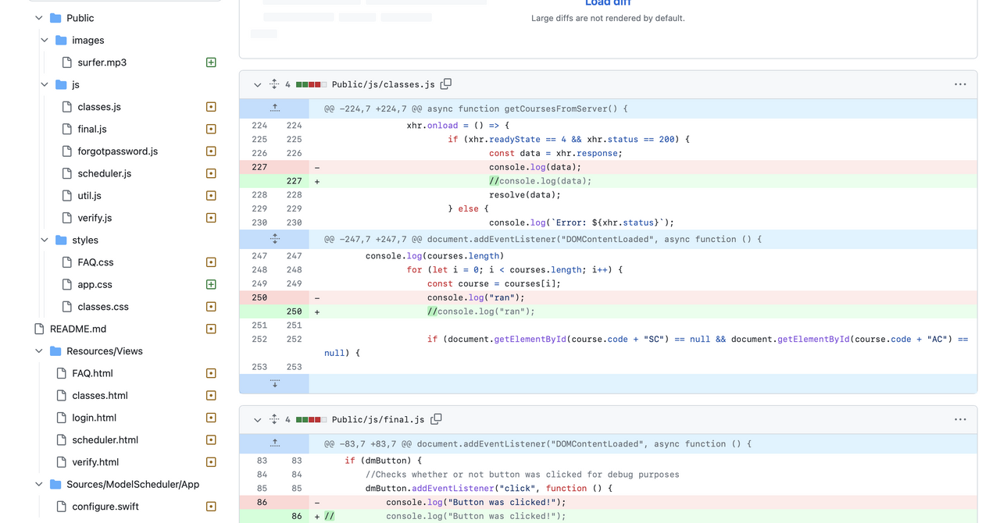

I'm going to correct my previous commit that ruined our project.
I'm going to continue implementing ADHD accomodations to address this issue. This will increase focus and help people complete the boring task of selecting classes.
I'm going to update the styling of the demand display to address this issue. This will make the website look nicer, and help the demand to be more easily understood.
I'm going to implement an ADHD accomodation to address this issue. This will increase focus and help people complete the boring task of selecting classes.
I'm going to update the styling of the demand display to address this issue. This will make the website look nicer, and the demand to be more easily understood.
I accidently committed a devastating change which set me back almost the entire week.
This issue didn't align with my plan for the week and it caused a major setback to the project. Hopefully, I'll be able to solve this issue quickly.
I struggled with figuring out GitHub and reverting my changes after accidently pushing a bad commit. I'm working on solving it now, however I'm still unsure on the best way to fix it. It also undermined some other commits afterward so those will need to be fixed and readded.
My github account unlinked so some of my commits aren't attributed to my name. I'll go through and try to claim the commits so that I can receive credit for them.
School is picking up and it's hard to find time for comp sci. I'm still getting the work done though. Hopefully once school calms down I'll be able to contribute more time to the ISP and journal.
We had no interpersonal challenges, everyone who normally works is working and talking.
I hate GitHub. I hate GitHub. I hate GitHub. I hate GitHub. I'm so tired and my terminal is destroyed I think BY has to reset it or something.
All my motivation to do comp sci is gone but oh welll, still getting my work done
Everyone who's been doing work has been doing well. The people who don't work aren't talking.
We didn't encounter any technical challenges, besides mobile issues.
We had no issues with scheduling, we just need more time.
We had no interpersonal challenges, most people were doing work. The people who weren't doing work just wouldn't talk.
Although the app is mostly complete our glaring issues are some hurdles with the login process, CTC classes having odd period data, and dual blocked classes not scheduling their second blocked period. I assigned some team members to fixing these issues. As far as other issues we fixed this week were small UI and design discrepancies as well as small bugs.
The counselors are delaying the release of the Model Scheduler for some reason. Many people are annoyed that arena scheduling is only a few days away and the model scheduler still hasn't been released. Hopefully they can give us a final due date soon so that we know how to plan.
Unfortunately, the model scheduler has taken so long to release that other people have found and cloned our GitHub Repo ripping out some key features and hosting knockoff apps themselves. One of these apps was promoted on a large school Discord server with around 750 members. Hopefully this won't harm our final user numbers.
I was trying to discover methods to break or harm the ISP so that we could match them before release, I discovered that you could spam the server with database requests. I helped Muqadam come up with this solution.
Made the modals I asked Brayden to setup look better, as well as added an "X" button and the GIFs.
Made large adjustments to the class selection pave, changed how it showed period availability.
Many of the features we have are half-baked and need significant bug fixing, it seems like team morale as at a low and few people are still consistently working. I imagine the night before the deadline, Thursday, will probably be our one and only productive day this week. I'm making my best efforts to get everything tied together and working half decently and I appreciate the people that are trying to help.
The counselors waiting so long to give us the final version of the master schedule is really biting us right now. We've had to rework and adjust many parts of the database as well as even the front-end. There's so many more things that we need to account for that we simply weren't prepared to handle. I'm worried that these short timeframes aren't going to allow us enough time to finish
At this point, people just need to work. Some are, many aren't. I have no power to make them work so I'm trying to lead those who are still willing to help as best I can.
Made the course selection titles sticky, removed demand display and replaced it with a different format, added custom CSS scrollbars.
Wrote code to compile the database into objects for front-end
Updated the look of the final page, basically just redid the whole thing
Created a search bar for the available courses column.
Front-end will now generate courses from back-end data.
Created the scheduler page
I redesigned the navbar for every page
This week we prepared for what we thought would be the initial release of the scheduler. We had a few nights of massive productivity in which we had half the team online at once, fixing bugs and putting together new features, which was a very nice change of pace. Ignoring that all of them were likely there so they could say they helped at the end, I still appreciate how much got done in such a short time.
Our largest scheduling challenges were receiving the final master scheduler from the AHS counselors. We didn't receive any information about it until a few days before release causing a frenzy in which we were forced to rewrite half our back-end as well as scripts to convert back and forth.
Many of the challenges we faced were with overworked counselors or a strict IT team giving us false deadlines and not giving us the support we needed. We worked through it though, things are looking like they'll turn out alright./
We had more issues with the database as well as credentials files, this was a hassle to sort out. We also began the actual scheduling logic as well as conflicting period logic. The code itself is spaghetti and appears to not be functioning very well so we'll have to rewrite it sometime. Another issue is converting our backend MySQL server into something usable for front-end then converting back. The largest limitiation we found of my SQL was a lack of arrays so that led to some janky code to combine courses into objects for front-ends use then converting back to be stored.
SAT was this week, many people in the group were busy and not very much got done unfortunately. I expect we'll be able to pick things up next week during Spring break once our large tests are over.
No interpersonal challenges to speak of besides Mr. Ben and his questionable ideas on certain aspects of the design.
This week was a struggle for the project. Mr Ben leaked his credentials and had his codermerlin account shut down, blocking us from using the database and blocking most work from getting done for multiple days. We also had to redo our secrets file multiple times which led to confusion and a lack of productivity while people setup the new systems
I'm finding it very difficult to balance the project while still maintaining my other school work as well as the SAT coming up soon. Almost all of my time is spent on school or working on the Model Scheduler. I'm trying my best to find a balance so that we can finish the product on time.
There weren't many interpersonal challenges to note. Many of those who don't want to work have stopped talking leaving a much nicer and more productive environment, besides a certain colleague calling everyone an idiot while they update their credentials to continue work.
Unfortunately some teammates aren't doing work, we're falling behind schedule pretty quickly. I'm improving communication and I began sending out tasks that each person needs to complete by the end of the week. This solution is working fairly well, tasks are starting to get done. However, we're going to enter crunch mode pretty soon as the deadline is sneaking up quickly and we still have a lot of work to do.
It's been extremely hard to block out time to work on this projecy. Mr. Ben has been assigning tons of work on top of this ISP, despite the fact that ours is due significantly earlier than everyone elses. This is only made worse by all of the assignments and tests from other classes. I'm going to start working on weekends to get this project up and running on time.
It's very difficult to encourange people to work and also to make sure they know what they're supposed to be doing. There's also a lot of compteting ideas about the style and feature priority. We're struggling to stay on track to create a minimum viable product, because everyone wants to create and add features that aren't necessary for the bare minimum functionality. Hopefully with some more direction and focus we can get a minimum viable product working very soon.
This week our largest technical challenge was merging front-end and back-end and trying to plan how our code will work together, after much deliberation we've settled on a plan for the front-end to use. We're now fighting over designs of the front-end which will be tough to fix. It's down to two designs, one made by me and another made by my colleague, they're complete opposites so it would be hard to compromise. Therfore, I think we'll settle it with a debate. Finally, we're working on a plan to hopefully merge the two sides of the group next week.
We've had plenty of scheduling challenges this week, the largest being the lack of class-time to actually work together. We tried to hold a meeting via Discord, unfortunately only six people could make it due to other commitments. Luckily, some people and I are working hard outside of school to get a minimum viable product off the ground, however we need much more time to work on this project and to talk to our group. We'll have to better utilize our class-time or better plan outside of school.
I have an idea in mind of how I want the website to look, unfortunately the doesn't align with the visions of my colleagues so there's been plenty of debate over the direction of the design. I'm going to stick to my ideas and it will likely come down to a vote between the team. We also had some issues with people spamming the Discord server so we had to implement a verification system. Finally, there's been some usual fighting between the group, leading to two people splitting off to form their own application to be used next year.
Most of the technical challenges that we faced this week were with getting the project started. We had to initiate a github repository as well as have each team member create 3 issues. With the 20 people working on our project, this turned out to be a massive undertaking. We were able to solve this issue by seperating our group by back-end and front-end each team would be streamlined. Another issue we ran into was pushing and pulling to the github. Many of the members on our team were facing an issue where they couldn't push or pull to our repository which slowed down our process significantly and ate up an entire class period. We solved this issue by asking Mr. Ben for help and searching things up on google until we resolved the issue and were able to push to the repository.
We faced many challenges with scheduling, mainly due to the fact that our team is broken apart into different class periods. We created a discord to better facilitate communication, unfortunately we're still struggling to manage the entire team efficiently. Hopefully as we settle into our roles our communication will improve. Another unfortunate issue is that parts of our project are locked until we complete the minimum viable product. This means that those in charge of less important features have to sit around until the MVP is done which slows us down and is inefficient.
We've had many issues with our teammates getting along. While the server was being setup, fights broke out multiple times over people joining and who gets what role. Eventually we settled down and held votes for the major positions, although there are still occasional fights. 4 seperate poeple wanted the role of Project Manager, after some fighting we settled on a vote. I won with 11 votes, 6 more votes than 2nd place. I'm hoping that I can take control of the teams and smooth out some of the fighting.
The role of a software development engineer, or software engineer is to apply their knowledge and build programs, software, and applications. Their roles range from development and design of software, to its implementation and maintenance. Their main role remains programming code for development of software programs; by applying their knowledge into real applications. In the case of the ISP, the Software Engineer is responsible for the main programming and code behind the program.
The main role of a QA engineer or a Quality Assurance Engineer is to find and fix bugs within the software and programs. They oversee the testing and quality assurance phase of a program’s development in order to ensure that it has as little problems as possible. Within the ISP they will also have a similar program, having the main responsibility of identifying and fixing bugs and problems within the software.
The role of the project manager is to direct the project; essentially to lead the project team and software development to fit the goals of the project within its constraints. Within the ISP their main role and responsibilities will entail leading the team, ensuring cohesion within the project, ensuring proper collaboration and communication and making sure that all team members are on task, and on the same page.
The role of a product manager is to be the leader of a product throughout its lifecycle. This includes everything from the initial concept and design to the launch and post-launch maintenance. Product managers are responsible for understanding customer needs and developing a product that meets those needs. They must also be able to communicate the product’s value to the customer and ensure that the product is successful in the marketplace.
The main responsibility and goal of the release engineer is to take care of the programming and code within the project. Dealing with the accumulation and delivery of source codes into programs and software, as well as proper deployment of the source code. They are to ensure that code is properly entered into the software repository and available for commercial reproduction. Within the ISP, their main role and responsibility will be to manage the GitHub side of the software project.